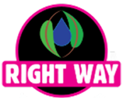

Digital experiences built for growth
Web design & development
agency that grows your business


We design and build modern, high-performing websites that help businesses look professional, connect with their audience, and turn visitors into customers.
Trusted by teams we've built for

Everything your business needs to grow online
We provide complete website and digital solutions for startups, local businesses, ecommerce brands, and growing companies.
Website design
Modern, responsive websites designed to build trust and turn visitors into customers.
Landing page design
Conversion-focused landing pages for campaigns, product launches, lead generation, and business promotions.
Ecommerce development
High-converting online stores with optimized checkout, product management, payment integration, and mobile performance.
Design, development, marketing & more under one roof
Web{X} Studio is a results-driven web design, development, and SEO agency. We go beyond beautiful designs by building digital experiences that help businesses improve visibility, increase conversions, and grow online.
More about the studio
Design
Interfaces built to convert, not just to look good.

Development
Fast, accessible builds on the platform that fits.

SEO
Technical foundations and content that earn ranking.

Digital Marketing
Campaigns, analytics and funnels that bring the right traffic.

Graphic Design
Brand identity, social and print that stay on message.
Everything your business needs for growth
SEO-first development
Every website is built with clean code, fast loading speed, and technical SEO best practices.
Mobile-first design
Your website will look and perform perfectly on mobile, tablet, and desktop devices.
Custom strategy
Every project is designed specifically for your business goals, target audience, and industry.
Conversion optimization
Clear messaging, strategic layouts, and strong calls-to-action that increase enquiries and sales.
Transparent process
Clear communication, defined timelines, and regular project updates from start to finish.
Ongoing partnership
We continue supporting your website with optimization, updates, and growth improvements after launch.
Innovate, Implement, Inspire
Recent obsessions


What can you expect
working with Web{X} Studio?
A clear, proven process that takes your website from the first conversation to launch — and keeps it growing long after.
-
Discovery call
We learn about your business, goals, and audience — then walk you through our work and the right approach for you.
-
Strategy & structure
We plan your sitemap, page structure, and content so every page has a clear purpose and a path to conversion.
-
Design
We design modern, on-brand pages built around your customer — shared with you for feedback at every step.
-
Development
We build it fast, responsive, and SEO-ready — clean code, tested across devices, with everything set up to perform.
-
Launch & optimize
We launch, track how it performs, and keep improving it with updates, SEO, and ongoing support.
Success Stories
The site finally reflects the work we do on the ground. Donors can see our programmes, our people and where their money goes — without us having to explain it over the phone.
Nar Seva Foundation
Admissions enquiries used to come by phone only. Parents can now find the curriculum, the facilities and the admission process themselves, and the school looks the part online.
Uttam Public High School
A school website built to answer parents before they call — curriculum, facilities and the admission process, all findable without picking up the phone.
Website design & build
An NGO site that shows the work on the ground: programmes, people, and where donations actually go.
Website design & build
A luxury brand and ecommerce build — refined wordmark, restrained palette, and a storefront that carries the same weight as the products.
Brand & ecommerce build
A custom ERP: HR, projects and finance in one place, replacing the spreadsheets that were holding the operation together.
Custom ERP platform
A commercial site for a water purifier brand, built to turn product interest into enquiries rather than just look the part.
Website & lead generation
A fitness product experience designed mobile-first, where most of the audience actually arrives.
Mobile-first product site
We build the answers.
We're sure you have some questions. These are the ones we get asked most often.
Did we miss your question?
Email us at: hello@thewebxstudio.com
It depends on scope — a focused landing page, a full marketing site, and an ecommerce build are very different projects. We scope every project individually and quote a fixed price up front, in INR or USD, so there are no surprises once we start.
Most marketing sites go live in 3–6 weeks, landing pages in about a week, and larger ecommerce or web-app builds take longer. You get a clear timeline after the discovery call, plus regular updates so you always know where things stand.
Yes — design, development, and SEO all happen in-house. Every build ships with clean semantic markup, fast Core Web Vitals, and proper on-page SEO from day one, rather than being bolted on after launch.
Absolutely. We build on a CMS that suits your team, then hand over with a walkthrough and documentation so you can edit content, add pages, and publish without needing us for every change.
Launch is the starting line, not the finish. We stay on for monitoring, updates, and ongoing SEO and conversion improvements — so the site keeps getting better as your business grows.
Yes — we work with founders and teams worldwide and are used to running projects fully remote across time zones, with async updates and scheduled calls that fit your working hours.
Ready to grow your business online?
Tell us what you're working on. We reply to every inquiry within two business days — with a real opinion, not a form letter.
Start a project